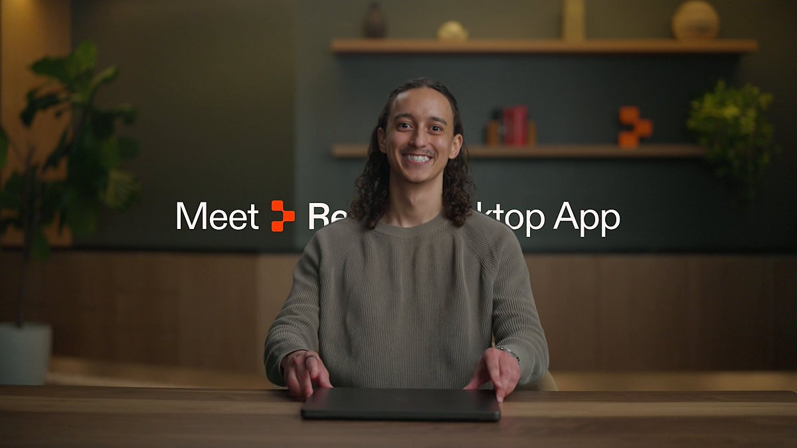

AI 日报 · 11月24日
困惑度安全提案与代理协作边界
OpenAI 提议用困惑度辅助共同安全标准；Builder 讨论代理软件选择、桌面安全和长任务协调，Every 追问自动化后人的判断价值。
模型评价
代理安全
人机协作
开源工具
5
Builder 动态
3
上榜仓库
1
深度对话
今日要点
深度对话
自动化之后，人的工作价值在哪里
Every Podcast 收录 Dan Shipper 在其会议上的演讲。他以一周内利用 AI 完成客户调研、定制 CRM、游戏和客户沟通为例，强调成果仍取决于人提出的视角和判断。
从执行量转向判断质量
演讲用 Every 的客户调查案例说明，自动化扩大了个人可完成的工作范围，但独特的问题定义与取舍仍由人负责。
Builder 动态
安全边界与代理协调
Sam Altman｜倡议共同评价规范
提出前沿模型开发者建立共同评价、红队与透明度规范，并讨论以困惑度等测量值设定开发限制；这是倡议，并非已经执行的行业规则。
Amjad Masad｜强调桌面代理安全
Replit CEO 认为桌面 AI 应用存在安全与隐私风险，并介绍其与 Windows 合作的桌面安全模型；具体安全效果仍需独立验证。

Aaron Levie｜长任务需要新的协调架构
Box CEO 认为，多代理并行处理长期任务时，系统需要更好地共享知识、追踪任务并协调人类用户。
GitHub Trending
安全技能与代理开发工具
11 月 24 日 GitHub Trending 快照；星标和 Fork 数取自同日 GitHub API。
今日思考
给代理能力配上可核验的边界
困惑度可以帮助比较基础模型的预测进展，却不能直接证明代理任务已经安全、可靠地完成。团队仍需记录任务结果、权限范围和人的复核节点。
今天可做
选一个长期代理任务，写下成功证据、失败信号和人工接管条件，再决定是否扩大自动化范围。
参考来源